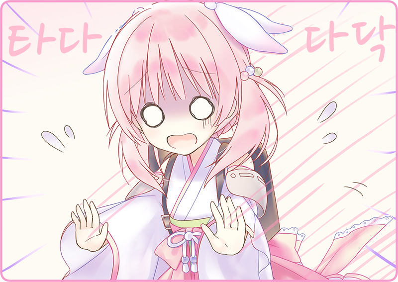

끓는 주전자를 손에 들고, 살그머니 드리퍼에 물을 내린다.
가느다란 주둥이에서 주르륵하는 소리와 함께 수증기가 오른다. 막 간 커피콩이 살짝 부풀어 오르며, 구수한 냄새가 주방에 퍼졌다.
제 입으로 말하기도 그렇지만, 꽤 숙달됐다고 생각한다.
커피잔에 따라 시음해 본다. 우박설탕은 크게 두 숟갈. 묵직한 감칠맛과 단맛이 느껴지는, 무척이나 진정되는 맛이었다.
열어젖힌 작은 창으로는 봄의 내음이 감돈다. 뒤편에 있는 작은 벚꽃도 만개하여 자연스레 그 가지에 시선을 빼앗으며, 자그마한 꽃잎을 흔들고 있다.
커피잔을 기울이며 밖을 바라보고 있자, 하이자쿠라의 목소리가 들렸다.
한 손에는 설탕 단지와 양식기가 든 바구니. 개점 전에 식기를 정리하고 있던 것이다.
「분홍색이니까?」
「그렇구나」
자율인형은 기름으로 움직인다. 딸기 크림도 연료가 될지도 모른다.
「벚꽃은 먹을 수 있어」
「꽃잎도 먹을 수 있고, 원한다면 잎도. 바닐라 같은 달콤한 향이 나」
눈을 동그랗게 뜨며 놀란다.
바구니를 정리하는 하이자쿠라.
그대로 뒷문으로 의기양양하게 나갔다.
작은 창으로 보이는 벚꽃은 조금 전보다 세차게 흔들리고 있다…….
「하이자쿠라, 먹으면 안 돼!」
당황하여 뒤쫓아가 크게 말했다.
때는 이미 늦었다.
하이자쿠라의 입안에는 이파리와 꽃송이가 담겨 있었다.
「그대로는 못 먹어……」
우욱 소리를 내며 헛구역질하고 있다.
눈가에는 눈물까지 배여 있다. 실제로는 냉각액이겠지만.
「자, 뱉어. 독도 들어 있어」
울상이 되어 새파랗게 질린 하이자쿠라.
하여간 등을 두드려 줄까 싶었지만, 손에 닿은 것은 차가운 배낭의 감촉. 소화기관임은 분명하기에, 일단 문질러 주었다.
＊ ＊ ＊
「무무무……」
거울 앞에서 부들부들 뺨을 주무르고 있는 카라스바.
「……에헤」
조금 고개를 갸웃하고, 생긋 웃는다.
「응, 좋은 미소야」
빙그르르 스커트를 돌리고, 다시 이쪽을 향한다.
「그러면 오늘 하루도 열심히 합시다!」
카라스바의 밝은 목소리가 플로어에 울려 퍼진다.
「네!」
이어서 하이자쿠라의 활기찬 목소리.
「알겠습니다」
겟카는 평소처럼 쿨한 모습.
「식사 준비도 완벽해」
에이프런을 꽉 정돈하면, 기분도 새로워진다.
「찻집 흑묘정, 개점합니다!」
곧바로 초인종 소리가 울려 퍼진다.
오늘의 첫 손님이다.
입가에 손을 대고, 크게 소리를 내뱉는다.
자율인형, 그리고 거기에 섞인 내 목소리가 손님을 맞이한다.
※ ※ ※
그러고서 며칠이 지났다.
「아침은 조금 바쁘지만 말이야……」
끼익하고 둥근 의자가 삐걱대는 소리를 냈다.
주방 안에서 살짝 시간을 주체 못 하며, 작은 창으로 플로어를 들여다봤다.
손님은 드문드문하다.
며칠 근무하고 알게 되었는데, 흑묘정은 기본적으로 단골손님에 의존하고 있다.
예를 들면 지금 창가에서 책을 읽고 있는 은테 안경 신사.
검은 신사복에 검은 넥타이. 마시는 것은 언제나 블랙커피.
어제도 있었고, 그제도 있었고, 두고 보면 쭉 이 시간 저 장소에 있는 느낌이다.
그런 손님은 그 밖에도 있어, 쫙 생각나는 얼굴이 얼마든 있다.
하지만, 그 외에 처음 오는 손님은 별로 기억에 없다.
「어이쿠, 벌써 시간이 이렇게 됐네」
플로어의 벽시계가 둥둥 낮은 소리를 냈다.
「그렇다는 건, 분명……」
내 손은 자연스레 냉장고로 향한다.
썰렁한 냉기를 느끼면서 얼음 덩어리를 꺼내고, 아이스 픽으로 부수기 시작한다.
작은 얼음을 2~3개 잔에 넣는다. 빙글빙글 돌리자 금세 잔에 물기가 흐르기 시작했다.
겟카가 작은 창을 통해 주문표를 건넸다.
「예예」
역시나.
슬쩍 플로어를 들여다보니, 신문을 한 손에 든 여성이 자리에 걸터앉아 있다.
펠트모에 바지 차림. 그녀도 단골손님 중 하나다. 기자일까, 아니면 변리사일까. 일이 끝나는 이 시간, 항상 티 펀치를 주문한다.
아침부터 사과, 레몬, 귤을 담가 둔 홍차 포트를 꺼낸다. 다시 잔을 얼음으로 채우고, 호박색을 절반까지. 소다를 조심히 따르고, 마지막으로 장식 레몬을…….
「……참」
문득 무언가를 떠올린다.
냉장고를 확인하니, 마침 먹음직했다.
꾸벅 인사를 하고, 겟카가 주문을 나른다.
반응이 신경 쓰여, 주방에서 얼굴을 내밀어 그런 모습을 지켜보고 있었다.
코스터 위에 살짝 잔을 놓는다.
플로어 접객은 기본적으로 겟카와 하이자쿠라의 일이다. 기본적으로 겟카는 일 처리가 확실해, 실수하는 일이 없다.
다만 붙임성은 없기에, 싱글벙글 웃고 있는 하이자쿠라의 존재는 귀중하다. 지금도 벽 옆에서 대기하며, 레코드 소리에 맞춰 몸을 흔들고 있다. 이쪽의 시선을 깨닫고 작게 손을 흔들어 준다. 어두운 벚꽃색 머릿결이 흔들린다.
「어라?」
신문에서 눈을 떼고, 곧바로 여성은 깨달았다.
「평소와는 다르네」
「봄이라서?」
「그래, 고마워」
피식 웃으며 잔을 들여다보고 있다.
「벚꽃잎이라니, 재치 있는걸」
달콤한 티 펀치 속. 탄산 거품을 조금 휘감고, 벚꽃잎이 떠 있었다.
얇게 립을 바른 입술을 빨대에 갖다 대고…….

「풉!」
타다다닥, 하이자쿠라가 달려들고 있었다.
생각지도 못하고 숨이 막히는 여성 손님.
슥슥 등을 문지르고 있다.
계산대에서 장부를 다루고 있던 카라스바가 소란을 알아채고 달려왔다.
약간의 소동이 일었다.
자신은 상관없다는 듯한 모습으로, 타박타박 겟카가 다가온다.
곁눈으로 슬쩍 손님 쪽을 본다.
「미안, 내 탓이야…… 설명하고 올게, 응……」

 「벚꽃은 왠지 맛있을 거 같네요」
「벚꽃은 왠지 맛있을 거 같네요」
 「「「어서오세요!」」」
「「「어서오세요!」」」